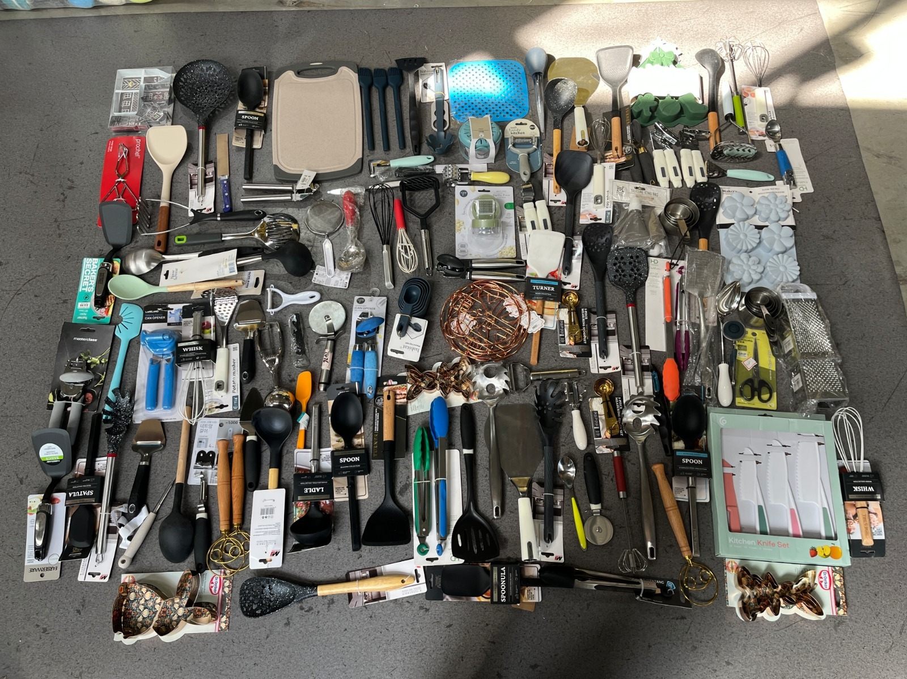

整体怎么打？
老客户、具名名单、线上获客、展会与转介绍一起跑，不押单一平台。
老客户、具名名单、线上获客、展会与转介绍一起跑，不押单一平台。
用 140 个有值报告地区的进口数据圈候选，再按可触达性与合规分层。
客户资格看进口、仓储和分销能力，不看他是否自称“库存商”。
从海关、展商、Google、LinkedIn 找公司，用 Lot 卡推进到 WhatsApp 与报价。
覆盖本地品类、批发、买家身份和采购场景，不只写库存词和英语词。
只看有效回复、合格买家、正式报价、订金和实际毛利。
网上获客和线下找客最终都进入同一条交易链；中国端直接服务的是能进口和分销的公司，不是每一家小店。
统一 Lot ID、实拍、产品数量、箱规、重量、CBM、MOQ、港口、条款和有效期。
进口商承担清关、仓储与本地履约，再向门店、电商、批发市场和适配的 HORECA 渠道销售。
2024 年相关厨具篮子进口约 US$35.07bn；这些数字用于圈候选市场，不等于库存厨具市场规模。
Mexico + Brazil + 现有 Chile / Peru 资源；本地语言找公司，WhatsApp 发 Lot 卡。
→USA + UK 或 Australia；先用进口记录和买家目录做定向外联，不先买宽泛流量。
→UAE + South Africa 或 Philippines；从行业目录找进口商与 HORECA 渠道，小样验证回复。
→法规或认证要求较高的市场，先核标签、材料文件与进口条件，不直接排进首轮投放。
有进口主体、仓库和下游网络，可接整柜或大批次。
熟悉一次性货盘、混装和快速周转，是老客户交叉销售重点。
服务酒店、餐饮和机构客户，更看重规格一致、文件和补货能力。
WhatsApp、历史报价、二手／清仓与大宗客户；最快验证新品交叉销售。
按 HS、货描、时间和重复进口筛公司；再排除货代与角色不清实体。
ABCasa、ABUP、Espacio Food & Service、Gastromaq 等可直接建账户池。
用本地“品类＋批发＋进口商”词找网站、门店、目录和 WhatsApp。
找 Buyer、Procurement、Import、Category、Commercial、Supply Chain 负责人。
当地批发市场、行业协会、老客户同行和清关行补足不公开搜索的买家。
“看到贵司进口／分销［品类］；我们有一批全新未使用的当前库存。”先问是否按箱、托盘或整柜采购。
WhatsApp 或邮件发送 3 张实拍、一页 Lot 卡和品类／数量；确认真正的采购或进口负责人。
确认公司、买家类型、是否自行进口、品类、采购量、目的港和采购时间，再发正式报价。
有方向就推更匹配的 Lot；没有明确需求就暂停，邀请加入每周新品库存更新。

锅具、餐具、刀具、不锈钢混装、厨房工具
目录中的 40FT 装柜方案参考
装柜照片 + 英语／西语视频
承接明确的产品需求，回答买家到底在找哪类锅具、餐具或厨房工具。
说明采购单位与 B2B 场景，把单件消费者与批量采购者分开。
用于 Google、Maps、LinkedIn 与行业目录中寻找进口商、分销商和批发商。
解释混装、整柜、现货、报价等交易条件，但不让“库存”占据全部流量。
utilidades domésticas atacado
— household goods wholesale
utensilios de cocina al mayoreo
— wholesale kitchen utensils
menaje de cocina al por mayor
— wholesale kitchenware
Kochgeschirr Großhandel
— cookware wholesale
grosir peralatan dapur
— kitchenware wholesale
أدوات المطبخ بالجملة
— wholesale kitchenware
以下只对应已有 Semrush 国家库快照；月量是第三方估算，不是成交量。
进口商、展商、WhatsApp 与转介绍需求不一定形成稳定搜索量；这些词先承担找公司与筛人的任务。
每周新品库存推送，销售一对一重联；验证最短成交路径。
锁定重复进口商和采购负责人；真正寻找整柜直客的主渠道。
承接主动采购与本地语言长尾；进入当前 Lot 页而不是泛品牌首页。
用实拍打开对话；聊天中确认公司、采购量、目的港和时间。
找到不主动搜索的大买家；以目录建名单，再由销售定向触达。
展示真货、再营销和小预算询盘测试；不预设它只能做品牌。
库存墙、开箱、彩色锅具或一个功能点；只负责让目标人群停下来。
大字说明：全新、未使用、当前可售批次；避免被理解为二手。
展示主要品类、箱数、MOQ；明确这不是单件零售。
箱标、包装、抽检、清单或装柜画面；让进口商判断可信度。
“获取当前库存清单” → WhatsApp；自动带出国家、品类和目的港。
A 全新、未使用
B 当前 Lot＋转售机会
A 品类＋批发词
B 品类＋供应商／进口商词
A 六字段表单
B 预填问题的 WhatsApp
A 混合 Lot → 综合分销商
B 纯箱 Lot → HORECA
先证明哪类公司愿意看货、报价和付订金，再决定国家、语言与渠道预算。
把当前可售货盘做成统一销售输入。
用同一 Lot 与资格问题获得可比结果。
建立可核验、可跟进的具名账户池。
UN Comtrade、OEC、WITS、Trade Map 用于国家、HS、贸易方向与关税判断。
ImportYeti 适合从美国海运提单中找进口公司，再核真正 HS、货描与重复进口。
Veritrade、Panjiva、Datamyne、Volza、ImportGenius 用于具名公司、频次与逐票字段。
官方展商入口；优先核进口、批发与厨具品类匹配。
与 ABCasa 重合的 1 家已合并；保留两条来源证据。
官方展商入口；重点核 HORECA 与批发分销能力。
官方展商入口；重点核品类、进口角色与采购单位。
海关没有“库存状态”字段，相关厨具进口额只用于圈候选市场。
知识库样本可用于预填；数量、价格、包装与条款仍以当前 Lot 为准。
进口或展商记录是核验入口；只有明确需求与采购条件才升级为商机。
连接合格买家、报价、订金与毛利后，才决定平台与国家预算。
不做宏观排行榜，按进口基础、渠道适配和当前能力选择首轮市场。
锁定有进口、仓储和下游分销能力的公司，而不是所有小店。
老客户、海关名单、展会目录、Google、Maps、LinkedIn。
先发当前批次，不发泛目录；先问采购量、目的港和采购时间。
有量词买流量，行业词找公司，库存词负责解释差异和筛选。
只看合格买家、正式报价、订金和毛利，决定继续、调整或停止。
这些客户熟悉一次性批次、混装和快速分销。渠道经验决定他们会不会买，不会改变货物是全新的事实。
全新、未使用；按当前可售批次展示真实品类、数量、包装和可报价期限。
进口分销商、折扣批发商和清仓大宗商，能接大批量并在当地拆柜、分销和回款。
海关数据说明当地长期进口相关厨具；它不直接等于库存厨具销量，真正进入顺序还要看客户路径。
现有清仓／二手大宗客户已经理解批次交易；优先推独立的“新品库存线”。
公开采购路径常见“进口商 → 品类目录 → WhatsApp 顾问／报价”。
进口基础最大，本地批发词最清晰；更适合独立做葡语页面、名单和广告测试。
确定当前可售品类、数量、箱规、MOQ 和可报价时间。
→让照片、清单、包装与报价范围指向同一批货。
→负责进口主体、目的港、清关与当地仓储。
→按箱、托盘或门店组合卖给批发商、零售商和机构客户。
→卖得动的品类进入每周库存推送和下一批采购。
有进口主体、仓库和下游网络，可采购整柜或大批次。
熟悉一次性货盘、混装和快速周转，是现有客户交叉销售重点。
服务酒店、餐饮和机构客户，采购更看重规格一致与文件完整。
CRM、WhatsApp、历史报价和清仓／二手大宗客户；最快验证交叉销售。
筛近 12–24 个月重复进口相关 HS 的公司，再剔除货代与不相关品类。
ABCasa／ABUP、Espacio Food & Service、Gastromaq 等展商与买家目录。
搜本地 importadora、distribuidora、atacado／por mayor，核对网站与门店。
找 Owner、Procurement、Import、Category、Commercial、Supply Chain 负责人。
圣保罗、Meiggs／Patronato、Mesa Redonda 等账户，再用 Instagram／WhatsApp 验证。
海关名单 → LinkedIn／邮件找到进口或采购负责人 → WhatsApp 发送当前批次卡。
老客户／相似商家 → WhatsApp → 当前 Lot 实拍、配比、箱规和转售机会。
展会目录／Google → 邮件或电话 → 只发规格稳定的纯箱批次。
Meta／TikTok／SEO 触达后做资格筛选；不具备进口能力则转给当地分销商。
用于 Google Search 的 exact / phrase，小预算按国家与语言拆分。
搜索量可以很小，但能在 Google、Maps、LinkedIn 和目录中找到公司。
新品库存是价值主张，不必假设它本身有稳定搜索量。
说明全新未使用、主要品类、采购单位；问对方是按箱、托盘还是整柜采购，以及目的港。
邮件／LinkedIn 找到采购或进口负责人；WhatsApp 发 3 张当批实拍与一页清单。
确认公司、进口能力、品类、数量、目的港、采购时间，再发送箱规、文件与报价。
提供替代批次或新增货盘；没有明确需求就暂停，邀请加入每周库存推送。
不论客户从哪个平台进来，都记录同一组信息，销售才知道哪个国家和渠道真正有效。
每周新品库存推送，销售一对一重联；验证最短成交路径。
锁定重复进口商和采购负责人；真正寻找整柜直客的主渠道。
承接主动采购，只投本地“品类＋批发”词，国家与语言分开。
用当前库存实拍找到批发商；聊天中完成六项资格筛选。
沉淀本地批发词、进口指南和当前库存页；长期降低主动需求成本。
真实货盘展示、再营销和小预算直接询盘测试，不预设只能做品牌。
库存墙、开箱、彩色锅具或一个明显功能点；先让目标人群停下来。
大字说明：全新、未使用、当前可售批次；避免被理解为二手。
展示主要品类、箱数、MOQ；告诉小零售买家这不是单件零售。
箱标、包装、抽检、清单或装柜画面；让进口商判断可信度。
“获取当前库存清单” → WhatsApp；自动带出国家、品类和目的港问题。
A 全新、未使用
B 新品库存＋当批清单
A 泛产品目录
B 当前批次实拍＋一页库存卡
A 六字段表单
B 预填问题的 WhatsApp
A 广泛批发兴趣受众
B 进口商／分销商账户名单
再放大流量。获客的终点不是点击，而是买家愿意报价、付订金和复购。
做一页库存卡，统一照片、清单、MOQ、条款和有效期。
智利等现有渠道先发新品 Lot，记录采购单位、目的港和未成交原因。
巴西、智利、秘鲁分别找进口分销商，随后才开广告和 A/B 测试。
官方海关进口代理值、目的国法规、GSC 原始导出、平台官方产品能力。
Semrush 第三方估算、公开渠道便利样本、内部少量销售线索。
真实畅销国家、广告平台赢家、具名成交客户，以及 Ahrefs 当前指标。
内部资料支持的产品族
一个独立样本的商品类型
同一独立样本的件数
有进口主体、仓储和下游网络；能承接整柜或大批次。
对价格带、混装和快速周转敏感，适合用证据包降低货况疑虑。
熟悉批次采购，可增加 New Inventory；货物身份仍是新品。
只适合同规格、品类纯箱和可稳定补货的 Lot，不适合随机混装。
更适合由当地伙伴拆柜后，以箱、件和低 MOQ 服务。
文件、品类一致性和持续供应成熟后再进入。
整柜或大 Lot · 证据包 · 出口报价。
清关 · 仓储 · 拆柜 · 本地授信与配送。
bazar · loja de 1,99 · marketplace seller · market stall。
承接全新库存厨具、当前 Lot、货况证据与三语询价。
解释 mixed container、MOQ、包装与装载，不与商业页抢主词。
承载集团供应网络、经核验案例和跨品类信任。
保持二手服装／鞋定位，只引荐新品厨具需求。
Lot ID、数量、箱规、状态、图片与交易条件必须随批次更新。
分别验证葡语覆盖缺口、渠道迁移和已有商机质量，不把三国混成同一打法。
平台最终以 Cost/SQL、报价率、订金成本和复购验证，而不是点击或表单数量。